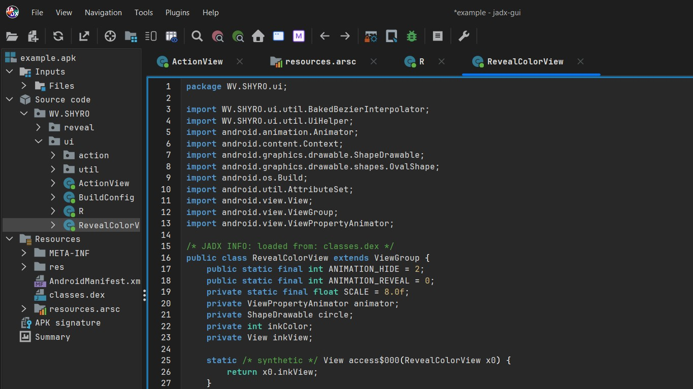
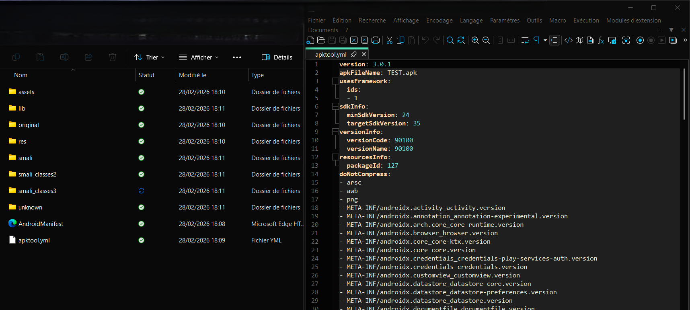

Workflow en 10 étapes
┌─────────────────────────────────────────────────────────────┐
│ WORKFLOW COMPLET │
├─────────────────────────────────────────────────────────────┤
│ 1. APK Acquisition → Récupération de l'APK │
│ (adb pull / Termux) │
│ │
│ 2. Initial Static Analysis → Vue d'ensemble rapide │
│ Tool: JADX (identification protections) │
│ │
│ 3. Extraction & Désassemblage → APK → smali + ressources │
│ Tool: APKTool (dex → smali) │
│ │
│ 4. Static Analysis → Analyse approfondie │
│ Tools: JADX, Smali (logique, patterns) │
│ │
│ 5. Protection Identification → Détection précise │
│ Ex: Jiagu, DexGuard, Unity IL2CPP │
│ │
│ 6. Dynamic Analysis → Contournement si nécessaire │
│ Tools: Frida, Dex Dumper (dump mémoire) │
│ │
│ 7. Patch & Modification → Modification du smali │
│ Tool: Smali (bytecode) │
│ │
│ 8. Rebuild & Sign → Reconstruction de l'APK │
│ Tools: APKTool, apksigner (smali → dex → APK) │
│ │
│ 9. Testing → Vérification sur appareil │
│ (adb install) │
│ │
│ 10. Documentation → Writeup + outils │
└─────────────────────────────────────────────────────────────┘1. APK Acquisition
Première étape : récupérer le fichier APK depuis l'appareil ou une source fiable.
Méthodes
- Via ADB — depuis un PC connecté
- Via Termux — directement sur l'appareil
# ADB : lister les packages
adb shell pm list packages | grep "nom"
# Obtenir le chemin exact
adb shell pm path com.example.app
# Pull l'APK vers le PC
adb pull /data/app/com.example.app-xxx/base.apk
# Termux : copie locale
pm path com.example.app
cp /data/app/com.example.app-xxx/base.apk /sdcard/
Astuce : Pour les applications splitées, la commande pm path peut retourner plusieurs chemins.
2. Initial Static Analysis (JADX)
Pourquoi cette étape est cruciale : avant de plonger dans les détails, JADX permet d'avoir une vue d'ensemble rapide du code Java. En quelques minutes, on peut identifier :
- La présence d'un stub (code minimal)
- Des appels à
System.loadLibrary()(indice de protection native) - Des noms de classes suspects (loader, protect, etc.)
- La structure générale du package
Exemple concret : détection de Jiagu
// Code typique d'un stub Jiagu
public class MainActivity extends Activity {
static {
System.loadLibrary("jiagu"); // ← INDICE FORT
}
protected void onCreate(Bundle savedInstanceState) {
super.onCreate(savedInstanceState);
nativeInit(); // ← Le vrai code est ailleurs
}
private native void nativeInit(); // ← Méthode native
}
Note : JADX décompile (dex → Java). Ce n'est pas du désassemblage (dex → smali), c'est un niveau plus haut.
3. Extraction & Désassemblage (APKTool)
APKTool remplit deux fonctions essentielles :
- Extraire — décompresser l'APK pour accéder aux fichiers (ressources, manifest, etc.)
- Désassembler — transformer les
classes.dexen smali (bytecode lisible)
# Désassemblage (dex → smali) + extraction
apktool d app.apk -o app_sources/
# Structure obtenue
app_sources/
├── smali/ # Code smali (résultat du désassemblage)
├── smali_classes2/ # DEX supplémentaires désassemblés
├── res/ # Ressources extraites
├── AndroidManifest.xml # Manifest extrait et décodé
└── apktool.yml # Métadonnées
Précision : APKTool ne décompile pas (il ne produit pas de Java). Il désassemble le bytecode en smali. Pour voir du Java, on utilise jadx.
4. Static Analysis (Smali + JADX)
Maintenant qu'on a les sources, on analyse en détail avec deux outils complémentaires :
- JADX — pour comprendre la logique Java (plus lisible)
- Smali — pour les détails bas niveau et les modifications
Exemple : analyse d'une vérification de licence
Vue JADX (Java)
if (inputKey.equals(validKey)) {
unlockPremium();
}Vue Smali correspondante
iget-object v0, p0, Lcom/example/MainActivity;->inputKey:Ljava/lang/String;
const-string v1, "XK9-JM4-PL2"
invoke-virtual {v0, v1}, Ljava/lang/String;->equals(Ljava/lang/Object;)Z
move-result v2
if-eqz v2, :cond_not_equal
invoke-direct {p0}, Lcom/example/MainActivity;->unlockPremium()V
:cond_not_equal
5. Protection Identification
À ce stade, on a suffisamment d'éléments pour identifier précisément la protection utilisée.
Jiagu 360
- Indices — stub minimal, libjiagu.so, System.loadLibrary("jiagu")
- Conséquence — Le vrai DEX n'est pas sur disque, nécessite Frida
DexGuard
- Indices — packages com/secneo/, classes obfusquées, chaînes chiffrées
- Conséquence — Analyse dynamique souvent nécessaire
Unity IL2CPP
- Indices — libil2cpp.so, dossier assets/bin/Data/, pas de managed/
- Conséquence — Analyse native avec Ghidra
Unity Mono
- Indices — dossier managed/ avec Assembly-CSharp.dll
- Conséquence — Analyse avec dnSpy / ILSpy
Important — L'identification guide la suite : Jiagu → Frida ; Unity IL2CPP → Ghidra ; etc.
6. Dynamic Analysis (Frida + Dex Dumper)
Pour les protections comme Jiagu qui chargent le code en mémoire, l'analyse statique ne suffit pas. On passe à l'instrumentation dynamique.
Installation de Frida
# Sur Termux
pkg update && pkg upgrade
pkg install python
pip install frida-tools
# Sur Windows
pip install frida-tools frida-dexdumpScript dex-dumper.js
Basé sur les travaux de Hluwa (FRIDA-DEXDump) et adapté par @ApkUnpacker pour Termux.
/*
Initially Created By Hluwa
https://github.com/hluwa/FRIDA-DEXDump
Modified By @ApkUnpacker for Termux
*/
function ProcessName() {
var openPtr = Module.getExportByName('libc.so', 'open');
var open = new NativeFunction(openPtr, 'int', ['pointer', 'int']);
var readPtr = Module.getExportByName('libc.so', 'read');
var read = new NativeFunction(readPtr, 'int', ['int', 'pointer', 'int']);
var closePtr = Module.getExportByName('libc.so', 'close');
var close = new NativeFunction(closePtr, 'int', ['int']);
var path = Memory.allocUtf8String('/proc/self/cmdline');
var fd = open(path, 0);
if (fd != -1) {
var buffer = Memory.alloc(0x1000);
var result = read(fd, buffer, 0x1000);
close(fd);
result = ptr(buffer).readCString();
return result;
}
return -1;
}
function DumpDex() {
var result = [];
Process.enumerateRanges('r--').forEach(function(range) {
try {
Memory.scanSync(range.base, range.size, "64 65 78 0a 30 ?? ?? 00").forEach(function(match) {
// [Code complet dans le fichier téléchargeable]
});
} catch (e) {}
});
return result;
}
setTimeout(function() {
DumpDex();
}, 2000);Exécution
# Lancer l'application avec Frida
frida -U -f com.example.app -s dex-dumper.js --no-pause
# Résultat : des fichiers .dex sont créés dans /data/data/com.example.app/
# On peut les récupérer et les analyser avec JADX
7. Patch & Modification (Smali)
Une fois le code compris (après dump si nécessaire), on peut modifier le comportement en éditant le smali.
Exemple : bypass de vérification de licence
Code original
invoke-virtual {v0, v1}, Ljava/lang/String;->equals(Ljava/lang/Object;)Z
move-result v2
if-eqz v2, :cond_not_equal # Si v2 == 0, saute le déblocage
invoke-direct {p0}, Lcom/example/MainActivity;->unlockPremium()V
:cond_not_equalCode patché (force le déblocage)
invoke-virtual {v0, v1}, Ljava/lang/String;->equals(Ljava/lang/Object;)Z
move-result v2
const/4 v2, 0x1 # Force v2 = 1 (true)
if-eqz v2, :cond_not_equal # Ne saute plus
invoke-direct {p0}, Lcom/example/MainActivity;->unlockPremium()V
:cond_not_equal8. Rebuild & Sign
Après modifications, on reconstruit l'APK et on le signe.
# Rebuild avec APKTool (assemble smali → dex + reconstruit APK)
apktool b app_sources/ -o modified-unsigned.apk
# Générer une keystore (si pas déjà fait)
keytool -genkey -v -keystore my-key.keystore -alias my-alias -keyalg RSA -keysize 2048 -validity 10000
# Signer avec apksigner
apksigner sign --ks my-key.keystore modified-unsigned.apk
Note : apktool b assemble le smali en dex,
puis reconstruit l'APK complet.
9. Testing
Installation et test sur appareil.
# Désinstaller la version originale (si présente)
adb uninstall com.example.app
# Installer la version modifiée
adb install modified.apk10. Documentation & Outils
La dernière étape est cruciale : documenter le processus et partager les outils développés.
Outils développés
apk-info-extractor.py
Extraction des métadonnées d'un APK.
python apk-info-extractor.py app.apkmanifest-analyzer.py
Analyse du AndroidManifest.xml.
python manifest-analyzer.py app.apksmali-pattern-matcher.py
Recherche de patterns dans le smali.
python smali-pattern-matcher.py ./smali/dex-dumper.js
Script Frida pour Jiagu.
frida -U -f com.app -l dex-dumper.js